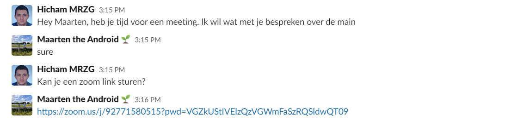
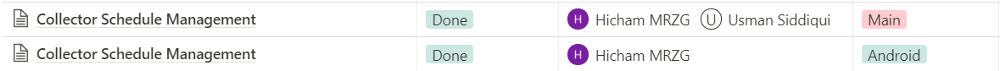
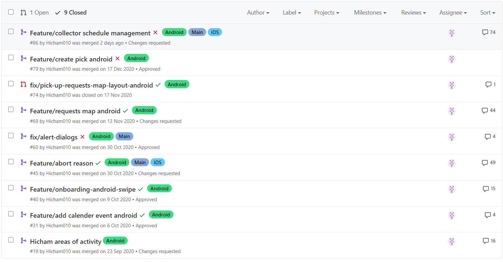
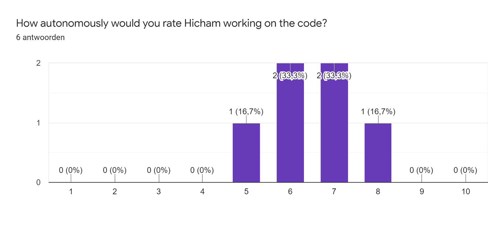
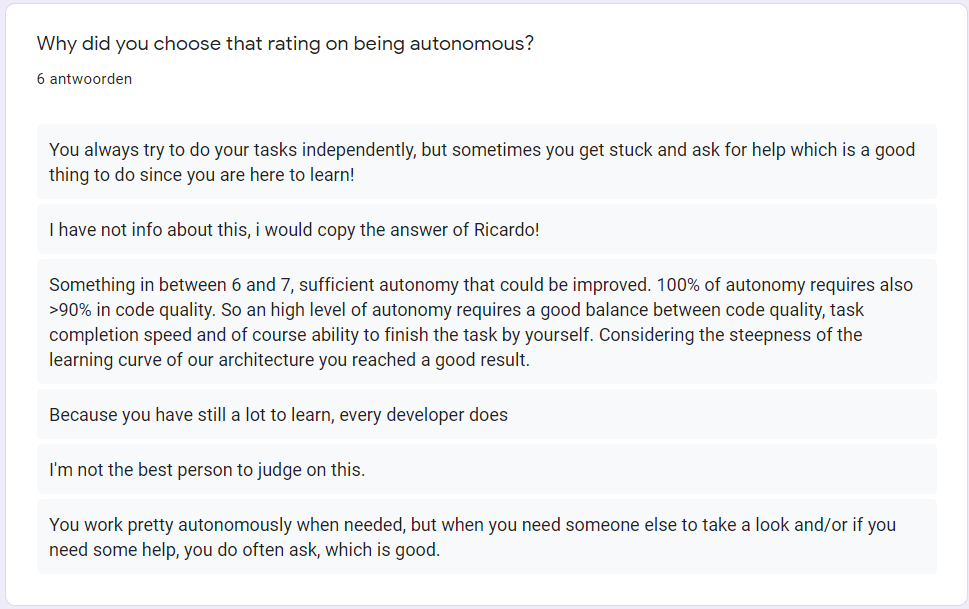
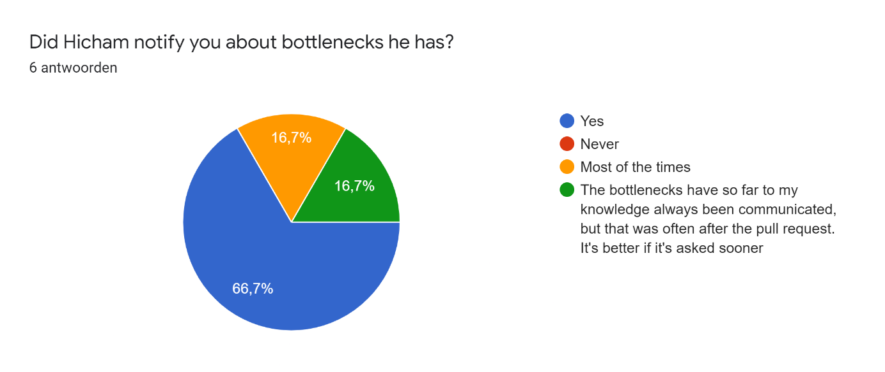
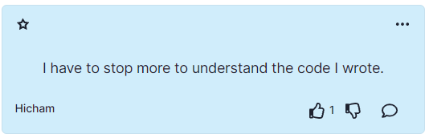
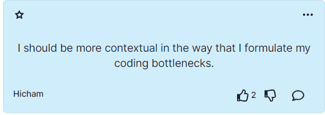

Professional Skills
Leerdoel 2:
Ik wil na afloop van mijn stage zelfstandig mijn werkzaamheden uitvoeren en zal voortgangen en eventuele knelpunten proactief aangeven bij een leiding gevende.
Bewijslast
Als bewijslast voor dit leerdoel wil ik het volgende laten zien: een gesprek op Slack waar ik een collega om hulp vraag, een screenshot van Notion waar ik mijn collega’s op de hoogte houdt van de progressie van een feature waar ik aan werk en al de pull-requests waar ik aan heb gewerkt om aan te tonen dat ik vooral zelfstandig werk, dit is ook terug te zien in het aantal commentaren die ik krijg voor mijn pull-request, aangezien ik een stagiair ben.



Feedback
Om feedback te krijgen van mijn collega`s heb ik hen gevraagd om een Google formulier in te vullen met de volgende vragen: “Welk cijfer geef je Hicham voor zelfstandig werken aan de code?”, “Waarom heb je gekozen voor dit cijfer voor zelfstandig werken?” en “Heeft Hicham je op de hoogte gehouden van eventuele knelpunten?”. Ik heb gekozen om niet de vraag te stellen of ik hen op de hoogte houdt met mijn progressie, omdat ik dan simpel weg een “ja” krijg. We hebben dagelijks stand-ups waar iedereen zijn progressie verteld voor de dag en op Notion kan dit ook bekeken worden. Ook wil ik melden dat 2 van mij collega`s die dit formulier hebben ingevuld niet technisch zijn en maar een getal hebben gekozen. Dit is een fout van mij omdat alle vragen verplicht waren. Dus de 5 en een 6 mag weggelaten worden. Tenslotte heb ik ook twee feedbackpunten die ik tijdens de retrospectieve heb benoemt over mijzelf verwerkt in mijn feedback. Omdat ik deze twee punten niet gehoord heb van mijn collega’s





Zelfreflectie
Het aangeven van knelpunten en mijn progressie, is niet iets waar ik in ben gegroeid gedurende mijn werkzaamheden bij het bedrijf. Ik heb mij zelf altijd al de regel gegeven als ik er niet uit kom na een uur of 2 dan vraag ik om hulp, dit is ook terug te zien in figuur 6. En het aangeven van progressie is van dag 1 al goed gegaan. Als ik werk ben ik altijd aanwezig bij de stand-ups en vertel ik mijn collega’s mijn progressie en wat ik gedurende dag zal doen of morgen zal doen, dit hangt af of het een ochtend stand-up of een middag stand-up is. Mijn mate van zelfstandigheid is wel gegroeid in het bedrijf. Waar ik eerst vaak met een andere collega, aan een feature moest werken deed ik dit later in mijn stage steeds vaker alleen. Zoals mijn collega zegt in figuur 5, de derde reactie dat het project waar ik aan heb gewerkt een steile leercurve heeft. Mijn collega legt ook uit dat je met de tijd vanzelf zelfstandiger wordt met het schrijven van de code. Hij vindt dat ik het goed heb gedaan rekening houdend met de steile leercurve van Kotlin Multiplatform mobile. Zelf heb ik ook feedback op deze punten waar ik aan gewerkt heb gedurende mijn stage. Vaak als ik code schrijf probeer ik maar een gedeelte te snappen in plaats van het gehele plaatje. Ik zeg dit omdat ik vaak een adapter heb geschreven voor Android maar nooit echt begreep hoe het werkt. Als ik dit meer zou hebben gedaan zou ik veel zelfstandiger kunnen werken. Ook vind ik dat ik meer contextueel moet zijn met de manier waarop ik knelpunten beschrijf. Ik ging er vaak van uit dat mijn collega het probleem kon herleiden uit mijn vraagstelling. Wat ik met deze feedback heb gedaan is dat ik meer tijd neem op de code te begrijpen in plaats van alles snel te proberen afronden. Verder als ik een knelpunt heb vraag ik om een zoomlink waar ik duidelijk aan mijn collega kan uitleggen wat het probleem is om samen tot een oplossing te komen.